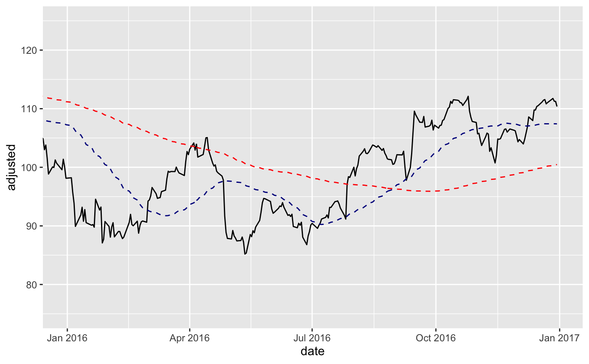

Zoom in on plot regions using date ranges or date-time ranges
Source:R/ggplot-coord_date.R
coord_x_date.RdZoom in on plot regions using date ranges or date-time ranges
coord_x_date(xlim = NULL, ylim = NULL, expand = TRUE) coord_x_datetime(xlim = NULL, ylim = NULL, expand = TRUE)
Arguments
| xlim | Limits for the x axis, entered as character dates in "YYYY-MM-DD" format for date or "YYYY-MM-DD HH:MM:SS" for date-time. |
|---|---|
| ylim | Limits for the y axis, entered as values |
| expand | If |
Details
The coord_ functions prevent loss of data during zooming, which is
necessary when zooming in on plots that calculate stats using data
outside of the zoom range (e.g. when plotting moving averages
with geom_ma()). Setting limits using scale_x_date
changes the underlying data which causes moving averages to fail.
coord_x_date is a wrapper for coord_cartesian
that enables quickly zooming in on plot regions using a date range.
coord_x_datetime is a wrapper for coord_cartesian
that enables quickly zooming in on plot regions using a date-time range.
See also
Examples
#> #>#> #> #>#> #> #>#> #> #>#> #> #>library(ggplot2) # coord_x_date AAPL <- tq_get("AAPL", from = "2013-01-01", to = "2016-12-31") AAPL %>% ggplot(aes(x = date, y = adjusted)) + geom_line() + # Plot stock price geom_ma(n = 50) + # Plot 50-day Moving Average geom_ma(n = 200, color = "red") + # Plot 200-day Moving Average # Zoom in coord_x_date(xlim = c("2016-01-01", "2016-12-31"), ylim = c(75, 125))# coord_x_datetime time_index <- seq(from = as.POSIXct("2012-05-15 07:00"), to = as.POSIXct("2012-05-17 18:00"), by = "hour") set.seed(1) value <- rnorm(n = length(time_index)) hourly_data <- tibble(time.index = time_index, value = value) hourly_data %>% ggplot(aes(x = time.index, y = value)) + geom_point() + coord_x_datetime(xlim = c("2012-05-15 07:00:00", "2012-05-15 16:00:00"))